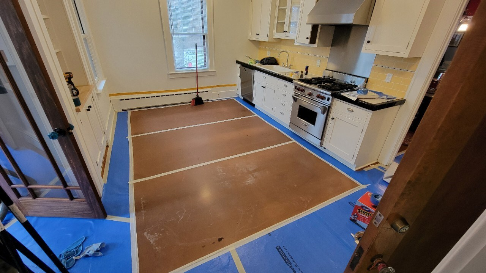
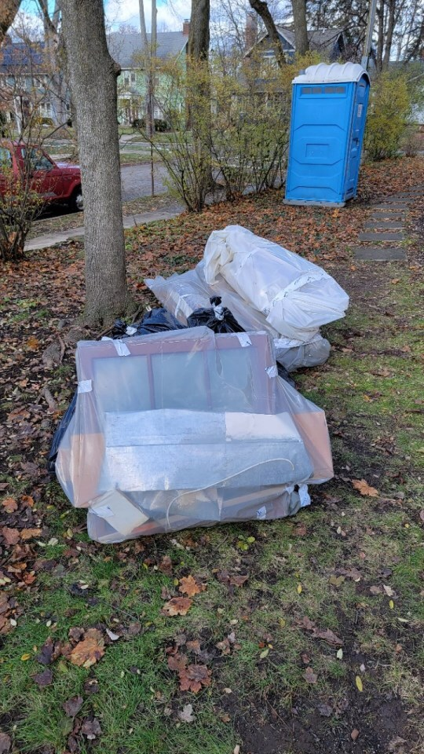

Demolition
Overview
Demolition can include everything from carefully removing appliances, fixtures, and finishes to ripping apart walls and floors. The point is to remove anything that is in the way of the other trades to follow.
This is usually the part of a project that can be the most hazardous and will reveal hidden conditions.
Process
-
Prerequisites
- Client personal belongings removed from work area
- Protect anything that needs to be saved in place
- Power and water will be interrupted, plan for this
- Take pre-demo photos of all work areas for documentation
- Determine if lead demolition procedures or testing is needed
- Get EPA RRP book signed by client before beginning demolition if needed
-
Stage critical items
- Plastic and site protection materials (zip poles, tape, etc)
- Trash bags, buckets, trash cans
- Air scrubber
- Caps for plumbing: SharkBite (1/2" and 3/4"), compression (1/4" and 5/16"), Fernco (1.5" and 2")
- Basic hand tools: drill, screwdrivers, wrenches, channel locks, utility knife, hammer, pry bar
- Electrical tester
- PPE: respirator, gloves, Tyvek suit, glasses, hearing protection
-
Site protection and dust control
- Cover floors
- Blue protection in high traffic areas
- Reinforced builder’s paper elsewhere
- Masonite on top where needed
- Seams taped with white painter’s tape
- Edges to floor taped with delicate release painter’s tape (3M purple painters tape)
- Remove wall hangings that could be damaged
- Protect railings, doorways, door sills, and finish surfaces that could be damaged
- Cover return and supply vents
- Turn off furnace if needed (leave keys nearby so it gets turned back on)
- Put up dust walls between work area and dust-free zone
- Install air scrubber or exhaust fans as needed
- Locate water, gas, and electric shutoffs in case of emergency
- Cover floors
-
Salvage and disconnection
- Remove items to be saved
- Disconnect appliances and remove as needed
- Disconnect plumbing fixtures and cap pipes
- Remove outlet face plates carefully instead of breaking them with plaster or drywall
-
Demolition and debris management
- Remove items that are garbage
- Disassemble when possible
- Smash if needed
-
Detail cleanup before leaving
- Remove nails and screws from framing, including ceilings and corners
- Remove trim nails and brads
- Remove tack strips if not saving
- Remove or flatten staples in floor
- Check corners for remaining drywall, plaster, flooring, nails, etc
- If drywall is being saved, square off half on studs or joists
- Sweep, or if lead use HEPA vac and wet wipe
- Take all trash to dumpster
- Remove wax rings around toilets
-
Safety protocol and end-of-day
- Cap bare wires
- Cap plumbing supplies and drains
- Cover floor holes if necessary
- Barricade fall hazards
- Turn furnace back on if it was turned off
- Confirm pilot lights re-ignite if gas was shut off
- Turn electrical circuits back on if needed
- Label circuits that should stay off
- Confirm fridges and freezers are plugged in and turned on
- Install temp gutters if needed
- Lock up
Inspection
Some jurisdictions have demolition inspections, often aimed at whole-home teardowns where the inspector confirms footings, pools, tanks, or other hazards have been removed. In those jurisdictions, remodelers may be required to pass a demolition inspection to verify scope and ensure no hidden condition or hazardous material prevents continuing the project.
Common issues and how to avoid them
- Treat protection like a long-term installation and plan for it to remain for months
- Remove nails and screws early so other trades are not working around hazards
- Cap supplies and drains before leaving site
- Bring plastic bags and stretch wrap to bundle items to save or haul for reuse
- Cover or barricade openings in floors immediately
- Turn on furnace, water heaters, circuits, and appliances



Resources
Last revised 01/03/2026
Feedback on this page
Spot an error or have a suggestion? Send a quick note. Name and email are optional.